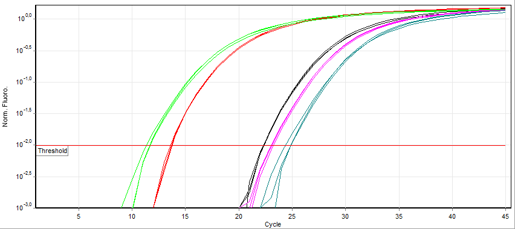
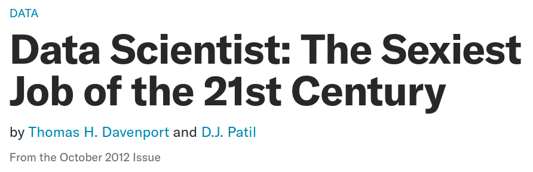
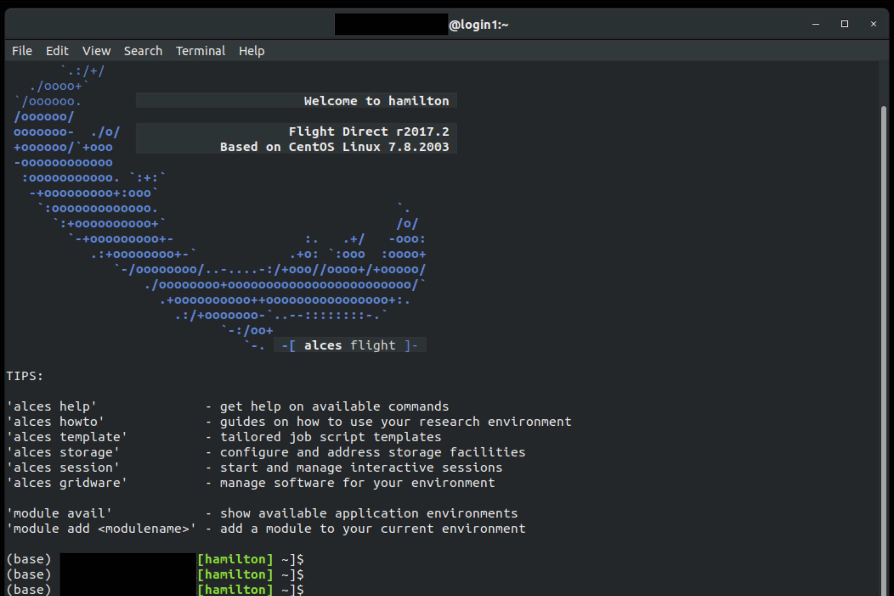
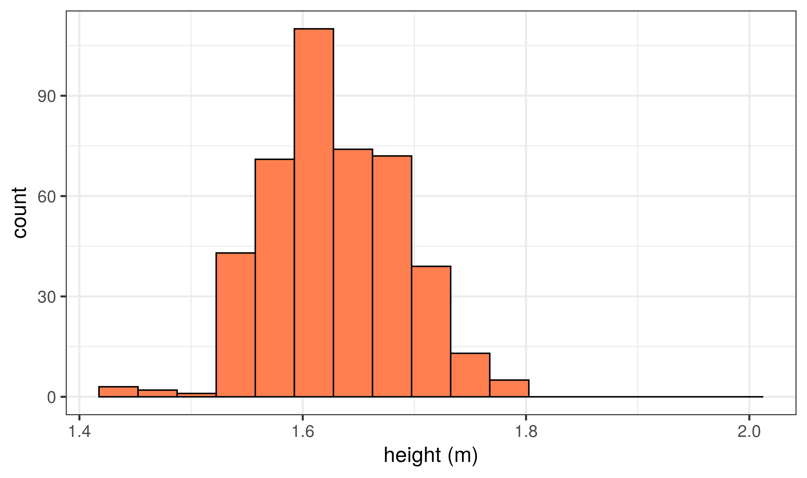
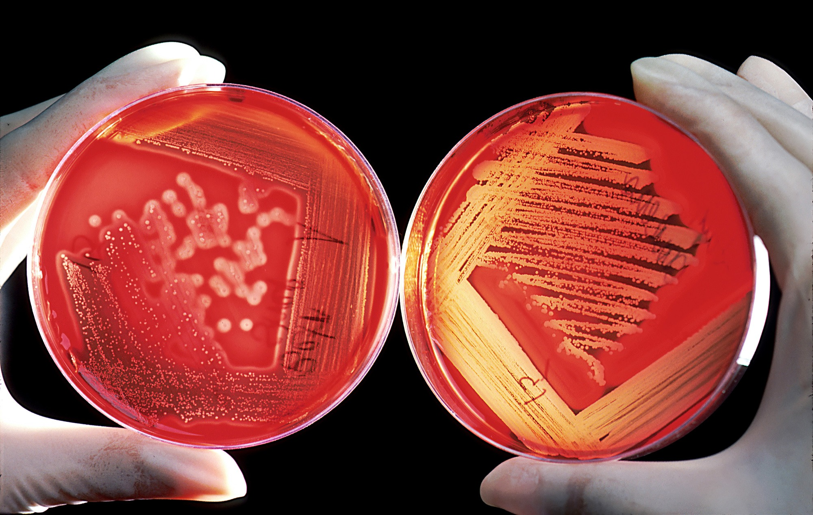
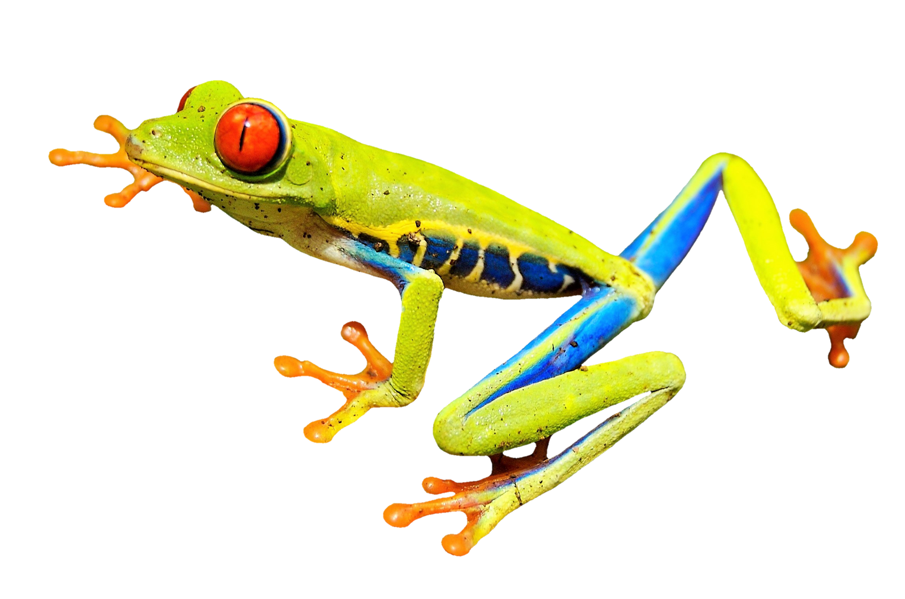

Data Analysis 1
BIOL10272: Practical Techniques
Dr Axel Barlow
email: axel.barlow@ntu.ac.uk
Data analysis 1
- Organisation
- Why is data analysis important?
- Computers and data analysis
- Variables
- Collecting data
- Organising data in a table
Organisation
What will you learn?

Organisation
- 4 online lectures
- Seminar 1:
ExcelandR. Online with optional drop in - Seminar 2:
R. Online with optional drop in - Revision session

How do you access software?
- Software:
ExcelandRrunning throughRstudio - NTU supported Virtual Machines
- All you need is a computer, internet connection and a web browser (e.g.
Chrome,FireFox) - At home or on campus
- Full instructions later
Where can you find additional information?
- Discussion boards on
NOW(post anonymously) - Web resources e.g. www.khanacademy.org
- Library: www.ntu.ac.uk/m/library
- General statistics: Data Analysis and Statistics with
R. https://dzchilds.github.io/stats-for-bio/ - More advanced bioinformatics:
Rfor Data Science. https://r4ds.had.co.nz/
Why is data analysis important?
The human mind works statistically
The brain produces feelings of confidence that inform decisions the same way statistics pulls patterns out of noisy data
Cold Spring Harbor Laboratory. ScienceDaily, 4 May 2016.
Supermarket X is cheaper than supermarket Y

Lab work also requires data analysis
- Quantitative PCR
- Quantify gene expression
- Or viral load
 Zuzanna K. Filutowska, CC BY-SA 3.0

Phosphate Assay lab

Also a tool for science communication
France seeing exponential rise...
Flattening the Coronavirus curve...
R number is now between 1.1 and 1.4...
Also a tool for science communication
Computers and data analysis
In school/college, you may have used these

Modern science relies on computers

Bioinformatics and data science
- Biology + informatics
- Computational analysis of biological data
- A key part of modern biological research
- Links biology, computer science, mathematics and statistics
- Part of the emerging field of data science

Harvard Business Review
Case study: Genomics
The human genome
- DNA comprising pairs of nucleotide bases
- 3,600,000,000 total base-pairs
- 3.6 Gigabases
- 2 copies per cell
- ~2 metres of DNA
This represents
- 1,028,571 pages of text
- 80 boxes of copier paper
- 1,096 years of typing

Magladem96, CC BY-SA 3.0
Case study: Genomics
This Illumina NovaSeq 6000 produces:
- 40 billion DNA sequences (20,000,000,000)
- each 150 bp in length
- 6,000 Gigabases of data
- equivalent to ~1,600 human genomes
- in < 2 days

Magnus Manske, CC BY-SA 4.0
Bioinformatics means you can play with cool kit
Laptop
- 6 CPUs
- 16 Gb RAM
- 0.5 Tb Disc space

Hamilton
- 512 CPUs
- 4 Tb RAM (4,000 Gb)
- 67 Tb Disc space
Software: Microsoft Excel
- Spreadsheet based program
- Widely used across many professions
- Grid of cells
- Arranged in rows and columns
- Cells can contain data or functions
- Can produce graphs
- Can perform various statistical tests and analyses
- Proprietary software
- Max 1,048,576 rows by 16,384 columns
- Max 2Gb file size
.svg "plot of chunk unnamed-chunk-16")

Used with permission from Microsoft.
Software: R
- Programming language
- Executed through the command line
- Or
Rstudioenvironment - Fully open source
- Many add-on packages
- Can handle very large files
- Vast range of analyses
- High quality graphs and diagrams
- Websites
- Reports
- This presentation!
CC-BY-SA 4.0

PAC2, AGPL
Try doing this in Excel ;)

Variables
Science finds things that affect other things
Science finds things that affect other things

Science finds things that affect other things

These things are called variables
A variable is something that can be measured or counted
There are three main types:
Categorical variables
Ordinal variables
Quantitative variables
- Continuous
- Discrete
The type of variable determines how data should be analysed and visualised
Categorical variables
[Can be referred to as qualitative or nominal variables]
- Things that have distinct categories
- Qualitative (assigned or named, not quantified)
- A fixed (or limited) number of possibilities
- Categories cannot be divided or multiplied
- Examples:
- Presence/absence of anything
- DNA nucleotides
- species
Ordinal variables
[Can be referred to as ranked variables]
- Things that can be ranked
- Categories that can be put in a sequence
- Qualitative (assigned or named, not quantified)
- A fixed (or limited) number of possibilities
- Categories cannot be divided or multiplied
- But we can identify a middle value
- Examples:
- Often used in questionnaires, e.g. dislike, indifferent, like
- Degrees: BSc, MSc, PhD
Quantitative variables
[Can be referred to as numeric, interval or ratio variables]
- Things that can be measured numerically
- Typically have units
- Values can be divided or multiplied
- Continuous
- An infinite number of possibilities
- Accuracy only limited by the experimental method
- Temperature, distance, speed, time
- Discrete
- Numerical measurements where only certain values are possible
- Counts, e.g. number of patients, molecules, etc.
Collecting data
Collecting data
A variable is something that can be measured or counted
- Taking a measurement or count is an observation
- The information you collect is a value (or datum)
- All the values together are your data
- The number of observations is your sample size (often expressed as
N)
Sometimes you record multiple variables from the same thing
- Patient number = 1234, gender = M, age = 24, heart rate = 70 bpm
- Here we have data for 4 variables, but it is a single observation
Observations should be independent
- One observation does not affect the other
- Lack of independence can cause the sample size to be misjudged
- This is called pseudoreplication
You measure the blood pressure of a single person 100 times
- 100 measurements, sample size
N= 1 person
- 100 measurements, sample size
You measure the length of 100 leaves from the same tree
- 100 leaves, sample size
N= 1 tree
- 100 leaves, sample size
Note before/after measurements are fine, but these pairs represent a single observation
Patient blood pressure before & after drug treatment
- 2 blood pressure values, sample size
N= 1 patient
- 2 blood pressure values, sample size
Samples should be collected at random
- We should not bias our observations towards particular categories or values
- Often one of the most difficult aspects of study design!
- Sometimes unavoidable, requiring careful analysis and interpretation
You count the number of bird species in a woodland habitat and in a lake habitat
- Woodland birds are harder to see
You work at an diabetes clinic. You investigate how many patients smoked prior to developing diabetes
- You work at an diabetes clinic: all your patients develop diabetes (some of whom happen to have smoked)
Organising data in a table
Tables
Tables are an excellent way to organise, store and analyse our data
- The format is flexible, but generally:
- Each row is an observation
- Each column is a variable
- The top row is the variable names
- Tables can be created and saved in
Excel, where further analysis can be carried out - Bioinformaticians tend to use plain text (space, comma or tab delimited)
- This is an ideal data format for importing into
R
Example tables
Beaver body temperature
| day | time | temp |
|---|---|---|
| 346 | 840 | 36.33 |
| 346 | 850 | 36.34 |
| 346 | 900 | 36.35 |
| 346 | 910 | 36.42 |
| 346 | 920 | 36.55 |
| 346 | 930 | 36.69 |
| 346 | 940 | 36.71 |
| 346 | 950 | 36.75 |
| 346 | 1000 | 36.81 |
| 346 | 1010 | 36.88 |
| 346 | 1020 | 36.89 |
Example tables
Beaver body temperature: plain text
## day time temp
## 1 346 840 36.33
## 2 346 850 36.34
## 3 346 900 36.35
## 4 346 910 36.42
## 5 346 920 36.55
## 6 346 930 36.69
## 7 346 940 36.71
## 8 346 950 36.75
## 9 346 1000 36.81
## 10 346 1010 36.88
## 11 346 1020 36.89
Data analysis 1
- Organisation
- Why is data analysis important?
- Computers and data analysis
- Variables
- Collecting data
- Organising data in a table
Next time
Barcharts, histograms, averages, and variability